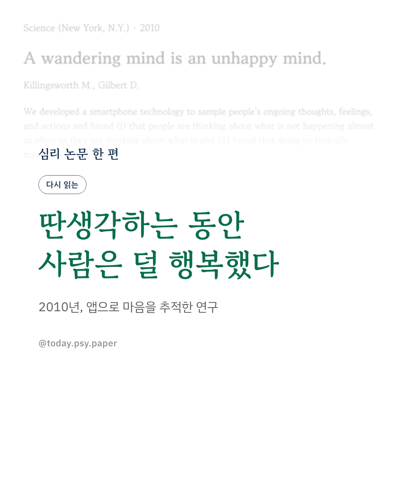
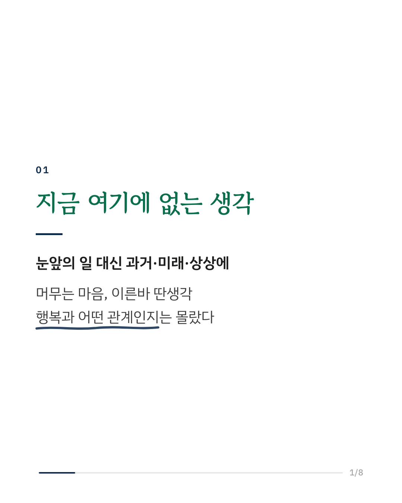
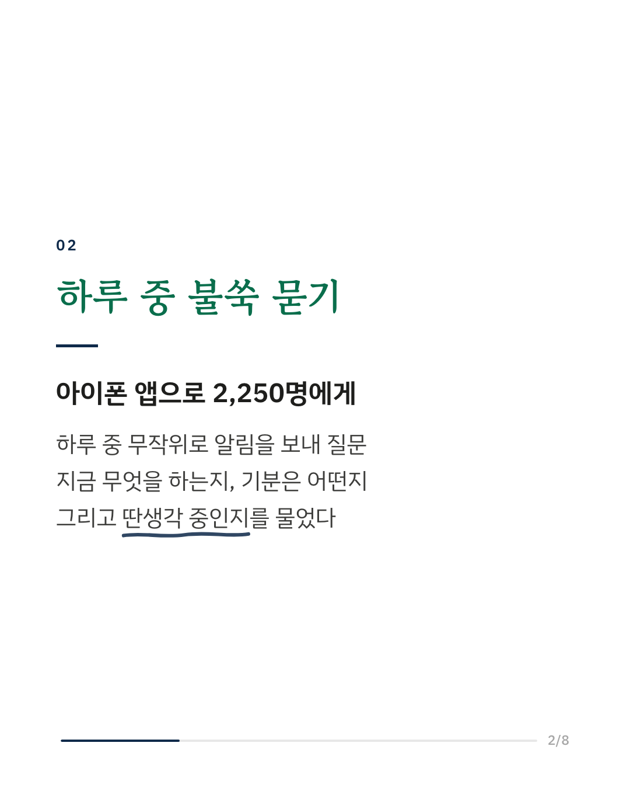
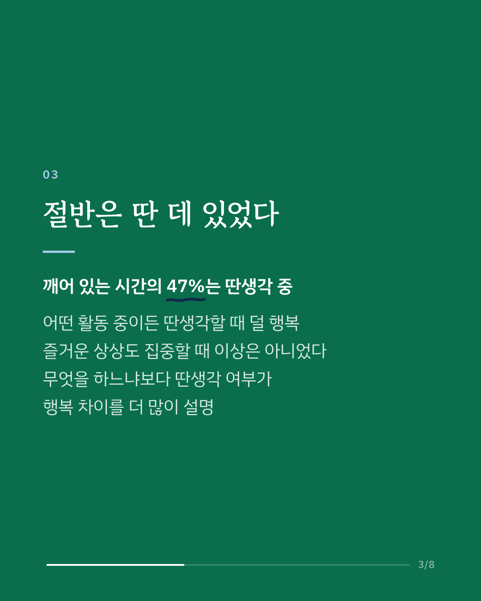
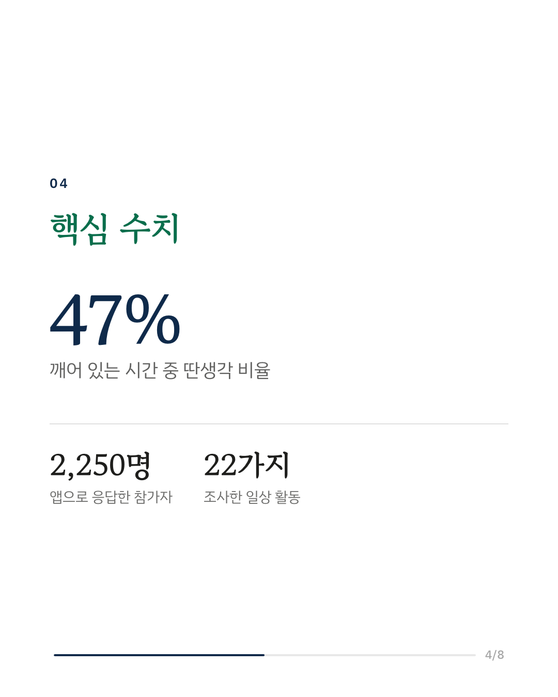
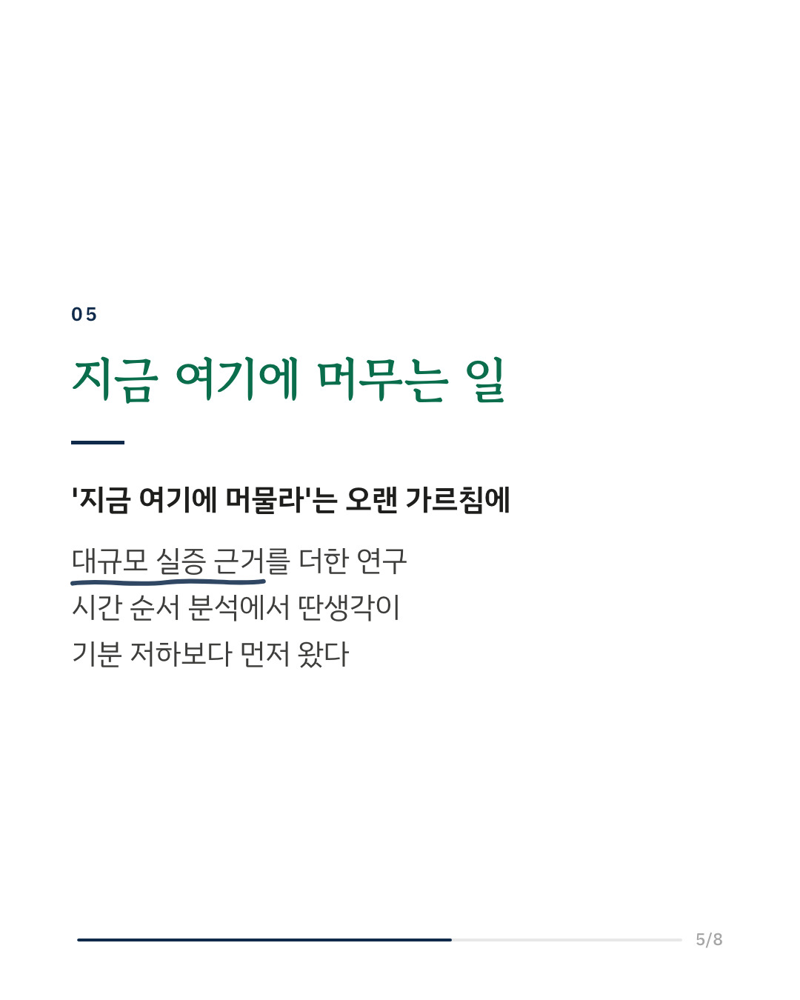
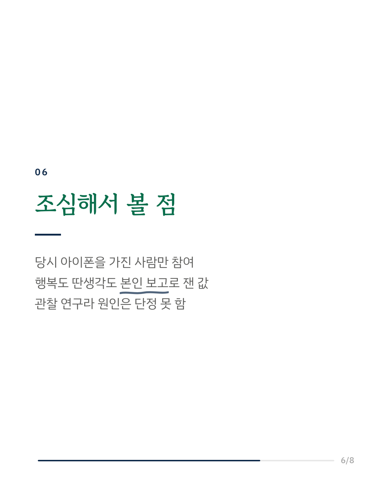
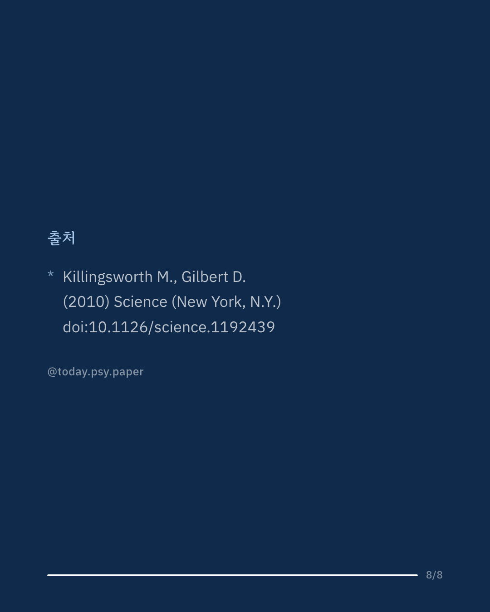

딴생각과 행복의 관계를 처음으로 대규모로 잰 연구입니다. 2010년 하버드의 두 심리학자는 아이폰 앱을 만들어 2,250명에게 하루 중 무작위로 알림을 보냈습니다. 지금 무엇을 하고 있는지, 기분은 어떤지, 그리고 하고 있는 일이 아닌 다른 것을 생각하고 있는지를 그 자리에서 물었습니다. 깨어 있는 시간의 47%에서 사람들은 눈앞의 일이 아닌 다른 것을 생각하고 있었습니다. 어떤 활동을 하고 있든 딴생각 중일 때 행복 점수가 더 낮았고, 즐거운 내용을 떠올릴 때조차 집중하고 있을 때보다 더 행복하지는 않았습니다. 무슨 일을 하고 있는지보다 딴생각을 하고 있는지가 행복 차이를 더 많이 설명했습니다. 시간 순서를 따져 보면 딴생각이 먼저 오고 기분 저하가 뒤따르는 쪽이었습니다. 이 논문은 마음챙김 연구가 '지금 여기에 머무는 것'의 가치를 말할 때 가장 자주 인용하는 근거 가운데 하나가 되었습니다. 다만 참가자가 2010년 당시 아이폰을 가진 사람들로 치우쳐 있었고, 행복과 딴생각 모두 본인의 보고로 쟀습니다. 출처: Science (2010), 'A wandering mind is an unhappy mind' DOI: 10.1126/science.1192439 #임상심리 #정신건강정보 #심리학연구 #논문리뷰 #마음챙김 #딴생각 #행복연구 #다시읽는논문
python3 publish.py 21071660